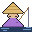

Gomoku
← arcade
中文

Save
// score
●
Lime
0
●
Tomato
0
// players
●
Lime
Human
AI
Rand
●
Tomato
Human
AI
Rand
// ai difficulty
Casual
Normal
Hard
RL ▷
⚙ train / load RL agent
Train your own agent, or paste a shared code:
Load code
⚙ train an agent →
// game
⟳ New Game
↩ Undo
⚑ Resign
⏸ Pause
◎ Coach
// remote play
Create Room
code:
—
Join
// remote tools
↔ Swap sides & restart
👍
😌
🤔
😅
😠
🔥
💣
🏳️
// log
✓ Allow
✗ Decline